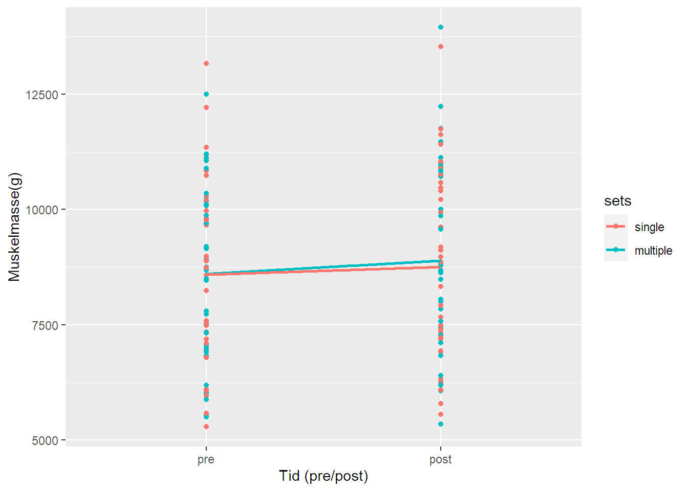

| Kvinner | Menn | |||
|---|---|---|---|---|
| Inkludert | Ekskludert | Inkludert | Ekskludert | |
| N | 18 | 4 | 16 | 3 |
| Alder (År) | 22 (1.3) | 22.9 (1.6) | 23.6 (4.1) | 24.3 (1.5) |
| Masse (kg) | 64.4 (10) | 64.6 (9.7) | 75.8 (11) | 88.2 (22) |
| Kroppslengd (cm) | 168 (6.9) | 166 (7.6) | 183 (5.9) | 189 (4.6) |
| Feittprosent (%) | 34.1 (5.6) | 28.8 (8.7) | 20.4 (6) | 24.3 (15) |
| Verdiar er oppgitt i gjennomsnitt og (SD) | ||||
6 Analyse av repeterte forsøk
1 Introduksjon
Variablar som treningsvolum, intensitet, type øvingar, TUT (time under tension) og pause mellom sett påverkar effekten av styrketrening (1). Det optimale volumet styrketrening for a maksimere vekst i muskelmasse, også kalla hypertrofi, har lenge vore eit omstridt tema innan forsking. Ein systematisk oversikt frå 2019 (2) konkluderte med at det på det tidspunktet var manglande bevis for å kome med anbefalingar om kva treningsvolum før gir størst grad hypertrofi. I 2022 konkluderte derimot ein ny systematisk oversikt (3) at ein plass mellom 12 og 20 sett per veke er optimalt for hypertrofi. Denne artikkelen vil analysere effekten av ulike treningsvolum på muskelmasse ved hjelp av eit datasett frå ein tidlegare studie (4).
2 Metode
2.1 Deltakarar og studieoverblikk
I denne studien blei førti-ein menn og kvinner rekruttert som deltakarar. For å kvalifisere seg måtte dei vere ikkje-røykarar og vere mellom 18 og 40 år gamle. Deltakarar som ikkje tålte lokalbedøving, hadde trent styrke meir enn ein gong i veka det siste året før studien, hadde nedsett muskelstyrke grunna skader, eller tok reseptbelagd medisin som kunne verke inn på treningseffekten, vart ekskludert. Sju deltakarar vart fjerna frå studien fordi dei ikkje fullførte minst 85% av dei planlagde treningsøktene. Dette skjedde av ulike grunnar, som ubehag eller smerte under trening (n = 5), skader som ikkje var knytte til studien (n = 1), eller manglande overhald av protokollen (n = 1). Ved starten av studien var det ingen forskjellar i maksimal viljestyrt muskelsamantrekking (MVC) etter at det var korrigert for kroppsvekt eller antropometri mellom dei inkluderte og ekskluderte i studien (sjå Tabell 6.1). Alle dei som blei inkludert i studien hadde tidlegare treningsbakgrunn innan lagsport, langrenn og gymnastikk. Av desse rapporterte tjue deltakarar at dei trena regelmessig på tidspunktet dei vart med i studien og ti av dei trena styrke av og til, men ikkje oftare enn ein gong i veka. Intervensjonen i studien var eit treningsprogram for heile kroppen som gjekk over 12 veker. For å kunne måle ulikheiter mellom ulike treningsvolum for kvar deltakar, vart beinøvingar gjennomført unilateralt med ulikt volum for kvart bein. Kroppssamansetjing vart målt før og etter intervensjonen. I tillegg loggførte også deltakarane kva og kor mykje dei åt frå veke 6 og ut intervensjonen.
2.2 Styrketreningsprotokoll
Deltakarane gjennomførte eit standardisert oppvarmingsprogram før kvar styrketreningsøkt. Denne oppvarminga bestod av fem minutt sykling, ti repetisjonar armhevingar, situps, rygghev og knebøy, og ti repetisjonar for kvar av øvingane i treningsprogrammet (ca. 50% av 1RM). Øvingar for bein var gjennomført i følgjande rekkefølgje: unilateral beinpress, lårcurl, og beinstrekk, der deltakarane gjorde eitt sett på eine beinet (singelsett) og tre sett på det andre (multisett) for kvar øving. Singelsett vart utført mellom det andre og tredje settet i multisett protokollen. Deretter gjennomførte deltakarane to sett av kvar av øvingane benkpress og nedtrekk, i tillegg til at dei bytta mellom skulderpress og sitjande roing for kvar treningsøkt. Deltakarane hadde pausar på 90-180 sekund mellom kvart sett. Treningsintensiteten auka gradvis gjennom intervensjonen, med 10RM i dei første to vekene, deretter 8RM i tre veker og 7RM i dei siste sju vekene. For å tilpasse treningsintervensjonen til kvar av deltakarane sine personlege timeplanar, vart nokre av treningsøktene gjennomført utan tilsyn. Gjennomsnittleg tal treningsøkter utan tilsyn for kvar deltakar var 91% av gjennomførte treningsøkter. For å kunne dokumentere treningsøkter utan tilsyn, var deltakarane instruert i å føre detaljerte treningsloggar. Treningsloggane var kontinuerleg sjekka av forskingsgruppa saman med deltakarane for å sikre progresjon og at deltakarane følgde protokollen. Frå og med den niande treningsøkta, var éi av treningsøktene i veka utført med ein redusert intensitet som svara til 90% av den førre treningsøkta, men med same tal repetisjonar. Treningsøkter med maksimal innsats vart gjennomført med minst 48 timar mellom, medan økter med submaksimal innsats (90%) var separert frå andre treningsøkter med minst 24 timar. For å betre umiddelbar restitusjon, vart deltakarane gjeve ei drikke som innehaldt 0,15g/kg kroppsvekt protein, 11,2g/kg kroppsvekt karbohydrat og 0,5g/kg kroppsvekt feitt.
2.3 Evaluering av muskelmasse
Muskelmasse vart evaluert før og etter intervensjonen ved bruk av DXA (dual-energy X-ray absorptiometry) (Lunar Prodigy, GE Healthcare, Oslo, Norway). Deltakarane var bedt om å vere fastande i to timar, og å unngå intens fysisk aktivitet i 48 timar før DXA-målingane. DXA-målingane etter intervensjonen vart gjennomført to dagar etter den siste treningsøkta.
2.4 Dataanalyse og statistiske testar
Dataanalyser vart utført i RStudio (5) med programmeringsspråket R (6). Ein para t-test og lineær regresjonsmodell vart gjennomført for å analysere skilnaden mellom effekten av dei to treningsvoluma.
3 Resultat
Endring i muskelmasse for singlesett vs multisett er visualisert i Figur 6.1. Muskelmasse auka i gjennomsnitt med 166g (2%) for singelsett og 289g (3.6%) for multisett. Dette gav ein skilnad i auke på 122.8g (95% CI: [8.6, 237], p = 0.036) mellom treningsvolum, noko som tilsvara ein 80% større auke i muskelmasse for multisett samanlikna med singelsett.

4 Diskusjon
Denne studien fann ein auke i muskelmasse for både treningsvolum. Auka var signifikant større for multisett enn for singelsett. Dette samsvarar med tidlegare originalstudiar (7–9) og metaanalyse (10) som har sett på effekten av ulike treningsvolum på muskelmasse.
Ein svakheit ved denne studien er at den berre ser på skilnaden mellom eitt og tre sett. Ettersom treningsøktene vart utført 2-3 gongar i veka, tilsvarar det 2-3 sett i veka for singelsett og 6-9 sett i veka for multisett. Både desse forholda er relativt små volum, samanlikna med funna til Brigatto et al. (7) og Baz-Valle et al. (3), som fant at henholdsvis 32 set/veke og 12-20 set/veke er optimalt for hypertrofi. Denne studien kan dermed ikkje utelate at fleire enn 6-9 sett i veka ville først til større grad hypertrofi. Studien sin inferens er difor kanskje noko avgrensa.
Ein annan svakheit ved denne studien er at same person trena to ulike volum for kvart bein samstundes. Studiar har demonstrert at styrketrening påverkar hormon i kroppen (11,12). Når same deltakar er testperson for to ulike volum, kan ein ikkje kontrollere om endringar i muskelmasse kjem av treninga i seg sjølv, eller av andre forhold som er påverka av det andre treningsvolumet – til dømes hormon i kroppen. Det er difor usikkert kva som skuldar endringane i muskelmasse i denne studien.
5 Konklusjon
Studien fant at både treningsvolum auka muskelmasse, der multisett hadde ein signifikant større auke enn singelsett. Grunna kunstig låge treningsvolum og at kvar deltakar var testperson for både treningsvolum samstundes, har studien avgrensa inferens og praktisk tyding.
1.
Ratamess N, Alvar B, Evetoch T, Housh T, Kibler B, Kraemer W, et al. American college of sports medicine position stand. Progression models in resistance training for healthy adults. Medicine & Science in Sports & Exercise [Internet]. 2009 Mar;41(3):687–708. Available from: http://dx.doi.org/10.1249/MSS.0b013e3181915670
2.
Krzysztofik, Wilk, Wojdała, Gołaś. Maximizing muscle hypertrophy: A systematic review of advanced resistance training techniques and methods. International Journal of Environmental Research and Public Health [Internet]. 2019 Dec;16(24):4897. Available from: http://dx.doi.org/10.3390/ijerph16244897
3.
Baz-Valle E, Balsalobre-Fernández C, Alix-Fages C, Santos-Concejero J. A systematic review of the effects of different resistance training volumes on muscle hypertrophy. Journal of Human Kinetics [Internet]. 2022 Feb;81:199–210. Available from: http://dx.doi.org/10.2478/hukin-2022-0017
4.
Hammarström D, Øfsteng S, Koll L, Hanestadhaugen M, Hollan I, Apró W, et al. Benefits of higher resistance‐training volume are related to ribosome biogenesis. The Journal of Physiology [Internet]. 2020 Jan;598(3):543–65. Available from: http://dx.doi.org/10.1113/jp278455
5.
Posit team. RStudio: Integrated development environment for r [Internet]. Boston, MA: Posit Software, PBC; 2023. Available from: http://www.posit.co/
6.
R Core Team. R: A language and environment for statistical computing [Internet]. Vienna, Austria: R Foundation for Statistical Computing; 2023. Available from: https://www.R-project.org/
7.
Brigatto FA, Lima LE de M, Germano MD, Aoki MS, Braz TV, Lopes CR. High resistance-training volume enhances muscle thickness in resistance-trained men. Journal of Strength and Conditioning Research [Internet]. 2019 Dec;36(1):22–30. Available from: http://dx.doi.org/10.1519/JSC.0000000000003413
8.
Aube D, Wadhi T, Rauch J, Anand A, Barakat C, Pearson J, et al. Progressive resistance training volume: Effects on muscle thickness, mass, and strength adaptations in resistance-trained individuals. Journal of Strength and Conditioning Research [Internet]. 2020 Feb;36(3):600–7. Available from: http://dx.doi.org/10.1519/JSC.0000000000003524
9.
Schoenfeld BAK Brad J. And Contreras. Resistance training volume enhances muscle hypertrophy but not strength in trained men. Medicine & Science in Sports & Exercise [Internet]. 2019 Jan;51(1):94–103. Available from: http://dx.doi.org/10.1249/MSS.0000000000001764
10.
Schoenfeld BJ, Ogborn D, Krieger JW. Effects of resistance training frequency on measures of muscle hypertrophy: A systematic review and meta-analysis. Sports Medicine [Internet]. 2016 Apr;46(11):1689–97. Available from: http://dx.doi.org/10.1007/s40279-016-0543-8
11.
Kraemer WJ, Häkkinen K, Newton RU, Nindl BC, Volek JS, McCormick M, et al. Effects of heavy-resistance training on hormonal response patterns in younger vs. Older men. Journal of Applied Physiology [Internet]. 1999 Sep;87(3):982–92. Available from: http://dx.doi.org/10.1152/jappl.1999.87.3.982
12.
Jansson D, Lindberg AS, Lundberg E, Domellöf M, Theos A. Effects of resistance and endurance training alone or combined on hormonal adaptations and cytokines in healthy children and adolescents: A systematic review and meta-analysis. Sports Medicine - Open [Internet]. 2022 Jun;8(1). Available from: http://dx.doi.org/10.1186/s40798-022-00471-6